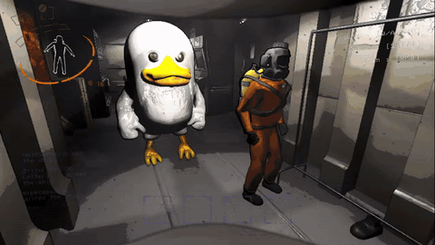
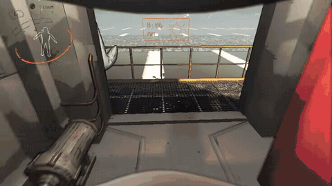
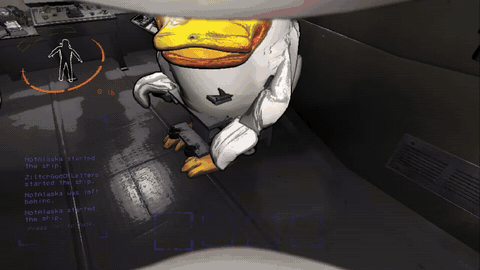

Lethal Company review: co-op horror, but everyone is a duck

In Lethal Company, the co-op horror game from Zeekerss, you and your crew land on abandoned moons, grab scrap and sell it to the Company to meet the quota. It plays solo or as online co-op.
I downloaded a couple of duck mods, so the three of us are giant ducks and most of the scrap we find is ducks too. When the ship terminal asked me to describe my role in a team dynamic, I typed "top duck". Then an Upside Down mod opened a flesh portal, a Demogorgon pulled us through, and I came back out holding a duck called El Ducko worth 1,300. A giant woodpecker we decided was probably friendly was not, and we still made the first quota on the last day.

Next we flew to the IKEA moon, which is also a mod, and beamed in with the inverse teleporter. On the second trip I got split off from everyone and my crew took off without me. The last moon was 64 Castle Grounds, a mod built like Peach's castle from Super Mario 64, and I strapped a friend into a modded electric chair on the ship. Our final run ended with two laughing mimics in duck suits chasing us back to the ship and clipping through the floor.
Under all the ducks it is still a game about scavenging scrap for the Company. When I died, my screen was just a giant duck head.

